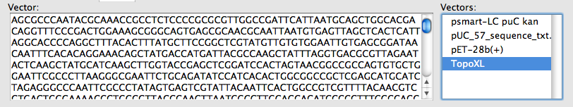
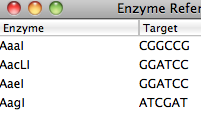

|  |
Back to Main Help Navigation Page
Vectors can be added/deleted to the database through the databases menu. Changes will be displayed in the vector listbox (box on right in image above).
The vector listbox contains all the vectors in the vector database. Selecting a vector will load the vector sequence into the adjacent vector sequence display box. If a restriction enzyme is selected and enter is pressed while the sequence display box or vector display box is in focus, the vector sequence will be scanned for restriction endonuclease sites. It there is a hit, the offending restriction enzyme is removed from the restriction enzyme list.